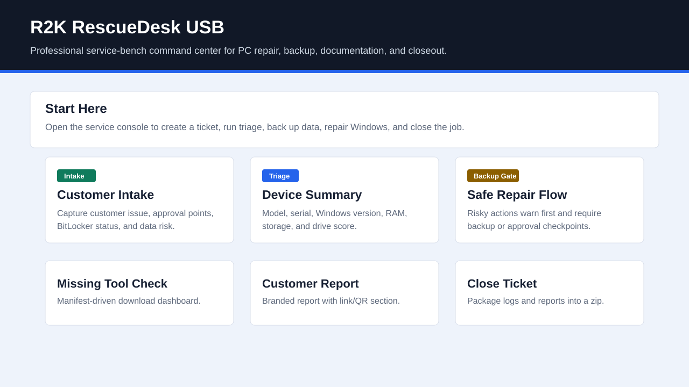
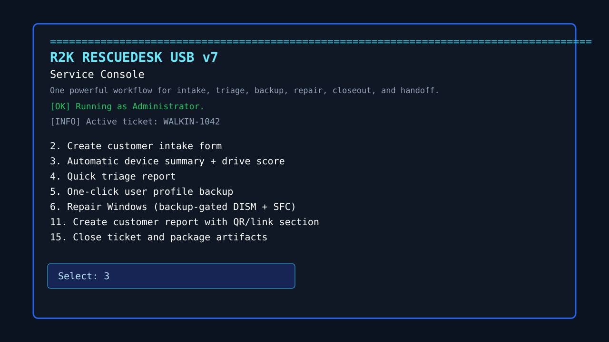
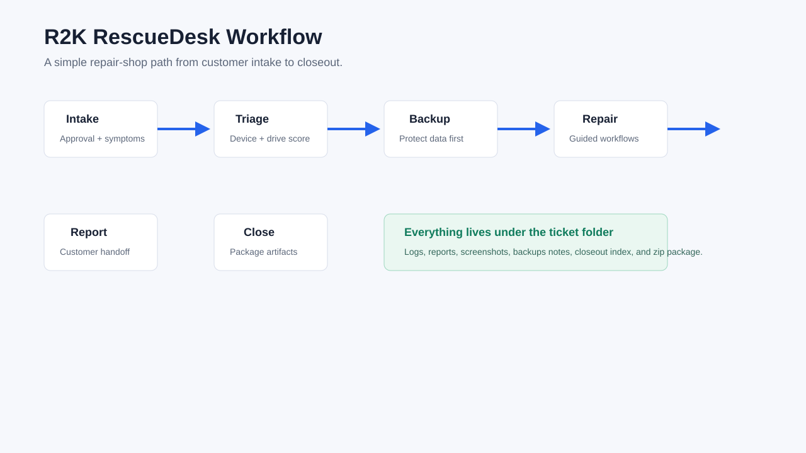

One-Click Start
Double-click START_HERE.cmd and work from one command center.
Ticket-Aware
Reports, logs, screenshots, hashes, and closeout files stay under one ticket.
Repair-Safe
Drive scoring and backup gates reduce avoidable repair risk.

